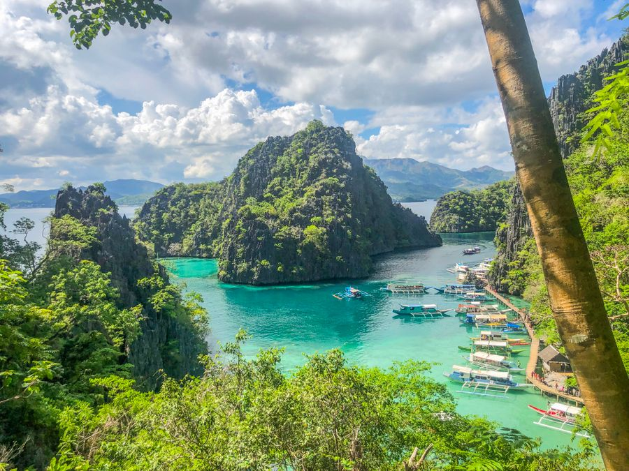
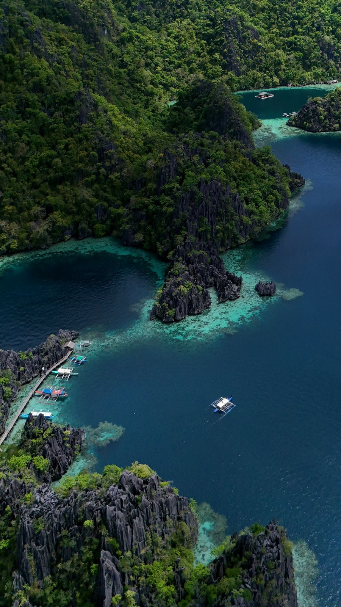
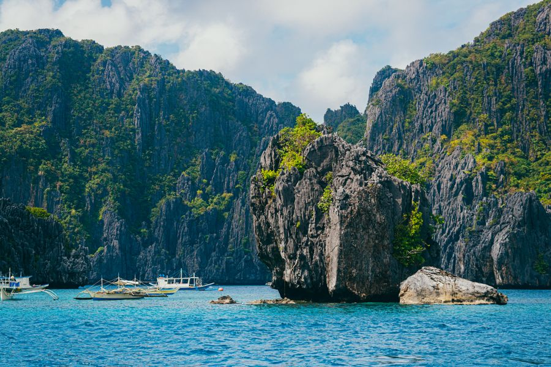
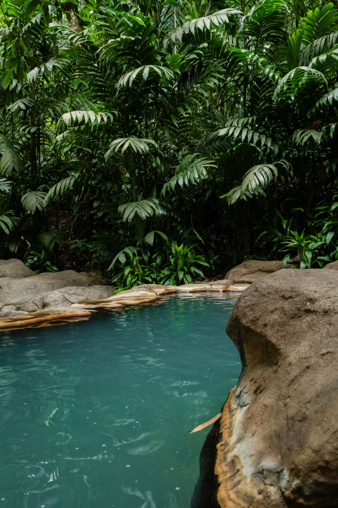
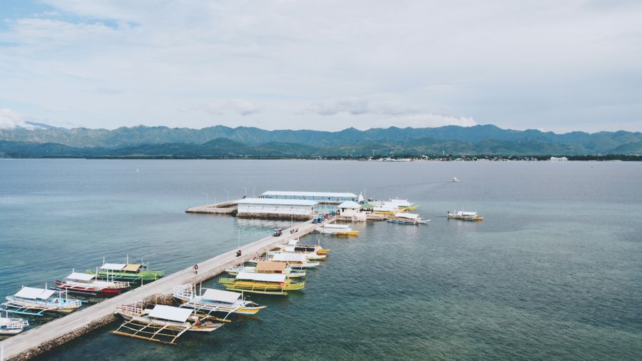
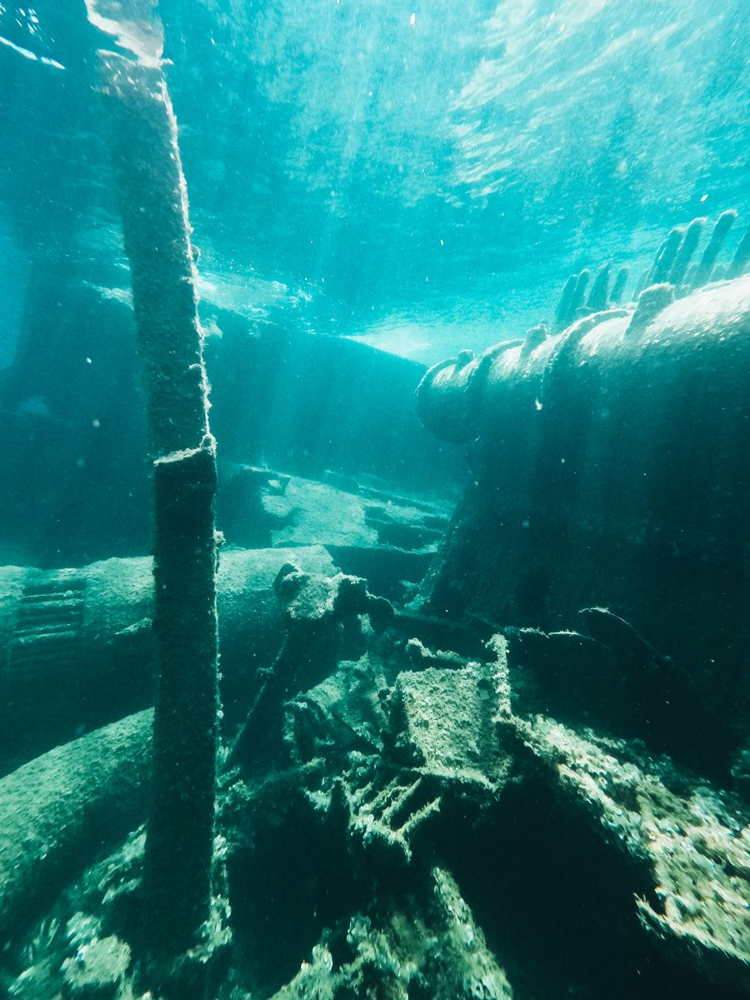
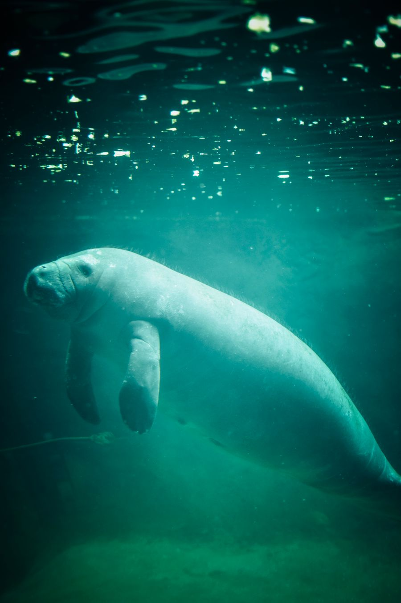
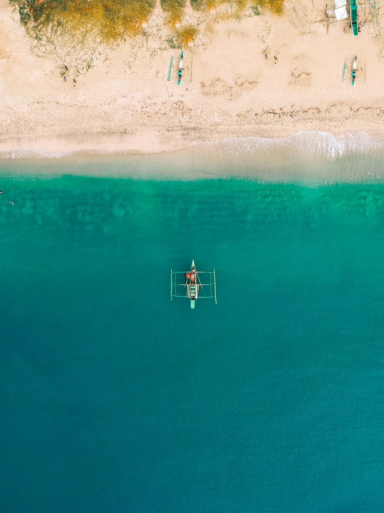
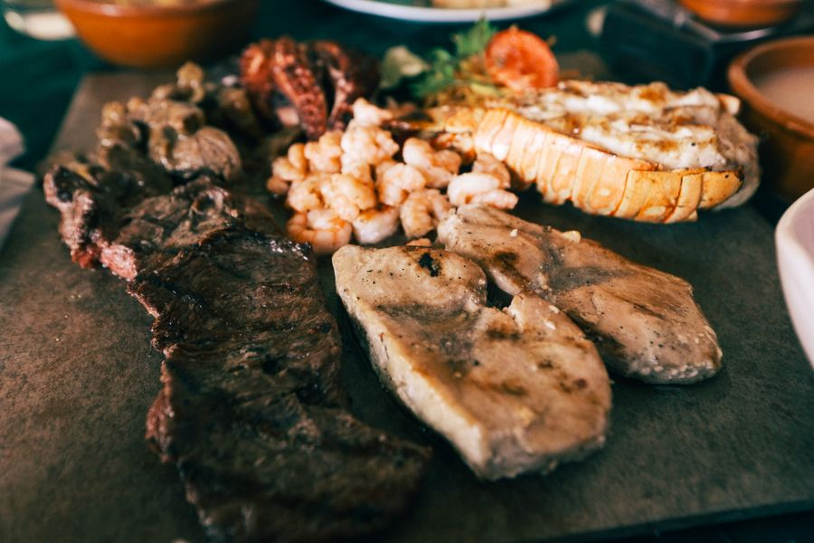

多个来源一致指出 8–10 月是科隆全年海况最差的窗口：科隆湾地处台风走廊，虽部分受地形遮蔽，但台风路径一旦横穿菲律宾，出海交通可能被整体叫停 1–3 天；外海岛礁跳岛行程（Kayangan Lake、Twin Lagoon、Calauit 等）确定性最低，部分潜店甚至 9–10 月整月歇业。
好消息是：科隆湾内的沉船潜点相对抗风浪，是你这趟的主要目标，大多数天气窗口仍能下水。本手册因此把行程全部压在湾内沉船上，跳岛只作为弹性可选项。
三条硬建议：① 买含潜水保障的旅行保险（DAN / DiveAssure，普通旅游险通常不保潜水）；② 不要把 9 天全部排满，留 2 天机动；③ 回程若经马尼拉转机，别买当天最后一班，给航班延误留出一天余量。
9 天 8 晚，主体是「马尼拉入境 → 飞布桑加 → 科隆镇落脚 → 按日出海潜水」。节奏围绕潜水日展开：潜日通常 2–3 潜，下午 4 点前回港；非潜日穿插跳岛与镇上恢复。餐饮与住宿在此只写范围，具体店名见第 4 模块。
菲律宾对持中国普通护照者开放14 天免签（2026-01-16 起试行一年），但有两个硬约束：只能从马尼拉 NAIA 或宿务 MCIA 入境，且停留不可延期。深圳无直飞宿务，但深圳航空有直飞马尼拉（约 2h20m），因此走「深圳 → 马尼拉 → 布桑加」最顺。
三段航程：① 深圳 SZX → 马尼拉 MNL（深航，夜航约 2h20m）；② 马尼拉 MNL → 布桑加 USU（Cebu Pacific / PAL / AirSWIFT，约 1h–1h25m）；③ 布桑加机场 → 科隆镇（面包车 30–45 分钟）。
关键提醒：马尼拉转机需换航站楼（国际多落 T3，国内航班有 T2/T3/T4），留足 3 小时以上转机时间；两段机票建议本身开在同一张订单上或至少留 4 小时缓冲，避免前段延误导致后段作废。马尼拉 → 布桑加是热门短线，务必提前 4–8 周订票。
科隆的景点分两类：水下（二战沉船、温跃层湖）与水外（石灰岩湖、泻湖、观景台）。水下的部分在第 3 模块「体验」里按潜水活动展开，这里聚焦可以先看懂的目的地本体。
菲律宾公认最清澈的湖泊之一，藏在科隆岛（与科隆镇所在的布桑加岛不是同一座岛）的石灰岩山体之间。水是 70% 淡水 + 30% 海水的混合，入眼不刺，能见度常超 15 m，湖底岩石与水下沉木清晰可见。
◷ 需爬约 700 级石灰岩台阶（单程 15–20 分钟），山脊观景台是全程最经典的机位。建议早上 9:30 前到，10:00–13:00 是人潮高峰，观景台一次仅容约 15 人。
社区环保费 PHP 300–400/人（通常含在跳岛团费里）· 岛上无刷卡，只收现金
必去禁止跳水湖底有隐藏岩檐，水深变化快，只能从指定入口下水，全程需穿救生衣。

两片被石灰岩壁隔开的泻湖：外层连通大海、水温偏低；内层有淡水泉渗入、偏暖。两湖之间低潮时可从岩壁下的窄洞游过去，高潮时就只能走木梯翻过去。
水温差在几米之内就能感受到，内湖水面如镜，是浮潜与拍照的绝佳点。建议让船家查好潮位再定顺序——低潮进出更轻松。
含在跳岛团费内 · 建议自带溯溪鞋，岩壁长苔处滑
出片浮潜

一座火山成因的湖，深度可达 40 m，最出名的是它的温跃层——湖水因盐度不同强烈分层，潜水或浮潜时穿过某一道水层，体感温度能在几秒内从约 28°C 跳到 38°C，像穿过一层温水的膜。
水下是石灰岩峭壁，生物不多（有虾虎鱼），但地貌与体感独一无二。需要背气瓶爬一小段台阶，是潜水日里最轻松又最特别的一潜。
潜水团费内 / 跳岛环保费另计
必去温跃层

少见的海水温泉，就在海边红树林旁，水温 39–40°C，池子由火山地热加热。潜水后泡一泡对肩背恢复很友好，也是科隆镇周边最容易安排的一站。
距镇中心约 7 km，三轮车往返约 PHP 300–400。傍晚去最舒服，白天偏热。
门票 PHP 200/人
潜水后恢复
科隆镇的制高点，约 700+ 级台阶到山顶十字架与观景平台，可 360° 俯瞰科隆湾、群岛与落日。Google 地图 4.8 分（293 条评价）。
约 15 分钟登顶。山顶无遮阴，白天很晒；傍晚 17:00 左右上山看日落最合适。潜水日建议只当天体力好时才爬。
免费
日落免费

所有潜店、餐厅、码头与住宿都集中在镇上，步行基本能走完。清晨的公共市场值得一逛——渔民刚上岸的渔获直接摆摊，可以买了拿去附近的 paluto 代加工店按小费加工，比餐厅更便宜也更新鲜，是当地人真实的吃法。
镇不大，夜间安静，没有派对气氛，多数人早睡早起赶船——正好配合潜水节奏。
市场渔获按品种计价 · 代加工费另算
市井买渔获
你的核心体验就是沉船潜水——科隆是全球最容易上手的二战沉船潜点群。这里把潜点按难度分组，附上每潜的看点、深度与对 AOW 的要求，方便你和潜店对表。

1944 年 9 月 24 日，美军第 38 特混舰队空袭科隆湾，击沉十余艘日本补给舰船。八十年过去，这些船体成了珊瑚包裹的人工鱼礁，集中在科隆湾内、距镇码头船程 20–60 分钟，一个区域就能连打十来个不同的沉船，这种密度在东南亚独一份。
◷ 单潜 45–60 分钟 · 两个潜点的全天套餐约 PHP 4,000–5,500（含导潜、气瓶、配重、船费，装备另租）
浅水热身（AOW 轻松）
· Lusong Gunboat 3–12 m，全开放，浮潜都能看
· Skeleton Wreck 6–10 m，船体轮廓清晰
· East Tangat Gunboat 3–22 m，基本无需穿舱
AOW 主战场（本趟核心）
· Okikawa Maru 10–26 m — 全湾最大，约 160–170 m 油轮，上层珊瑚覆盖极好
· Olympia Maru 15–30 m — 货舱可穿游，软珊瑚、狮子鱼
· Morazan Maru 14–26 m — 黑珊瑚舷窗 + 机舱，最上镜
· Kogyo Maru 22–34 m — 货舱里还躺着推土机与搅拌机
· Akitsushima 22–36 m — 唯一军舰，甲板防空炮与吊车结构完整
深潜档（建议再加 Deep 专长）
· Irako 33–43 m — 全湾最深、保存最好，多被资深潜水员评为科隆第一；流较强，气量管理与浮力要求高
AOW 适配穿舱需 Wreck 专长
选店建议：科隆潜店水平差异较大，圈内有个说法叫「Coron Cowboys」，指那些在穿舱流程上偷工的店。预订前直接问三件事：穿舱时导潜会不会布引导绳？光区（light zone）规则是什么？导潜是否持沉船专长？正规店会答得很清楚。
装备建议：3 mm 湿衣足够（水温常年 27–30°C），一天多潜可上 5 mm；带 Nitrox 认证，22–36 m 的船上用高氧能明显延长免减压时间；自备主灯 + 备用灯。

北布桑加的海草床生活着菲律宾最大的儒艮种群，约 30–40 头。这是受严格管理的观赏活动：船停在远处，浮潜者安静漂在水面，等儒艮自己过来——不追、不潜、不围。
◷ 需一早出发，往返常占整天 · 约 PHP 2,500–3,500（拼船）
最佳季节 11–5 月——你的 9 月行程命中率会明显偏低，海况也增加出航不确定性。当作弹性备选，不当作必成目标。
需拼船9 月命中率低

最经典的是 Coron Island Tour A：凯央根湖 + 双子泻湖 + 梭鱼湖 + 珊瑚花园 + 沙滩，一天走完科隆岛的核心水面。拼船约 PHP 1,500–1,800/人，另加社区环保费约 PHP 300。
潜水日与非潜日需要错开——跳岛虽以浮潜为主，但若当天还安排深潜，请务必遵守 18–24 小时间隔。多数人把跳岛放在潜水的间歇日或最后一天。
拼船划算早出发避人潮
本模块只覆盖三类：当地小吃、值得专程去、住宿。科隆镇很小，餐厅与酒店都在步行或几分钟三轮车范围内，动线压力不大。评分来源均为 Google Maps（境外口径）。

菲律宾最经典的生鱼吃法：新鲜鱼肉用醋 + 卡曼橘（calamansi）腌制，配姜、洋葱、辣椒。要点在于鱼够不够新鲜——科隆靠渔港，当天上岸的鱼做这个最好。口感酸爽开胃，是等主菜时的绝佳前菜。
PHP 200–350 · 几乎每家海鲜店都有，点单时问「今天的鱼是什么」
这不是一家店，而是科隆最地道的吃法：清晨去公共市场（Coron Public Market）挑刚上岸的鱼、虾、螃蟹，拎到市场附近挂着「paluto」招牌的小店，付一点加工费让他们按你的口味做——烤、蒜蓉、酸汤都行。
渔获按品种时价 + 加工费约 PHP 100–200/公斤 · 比餐厅便宜且更新鲜，当地人就这一口
最地道要早去市场清晨最热闹，中午后好货基本没了。
科隆本地的招牌甜点伴手礼，用当地卡曼橘做的玛芬，酸甜清香。几乎每家本地烘焙店都有卖，也是科隆最容易被带回家的味道。
PHP 60–120/个 · 镇上烘焙店与部分餐厅有售
科隆名气最大的海鲜店，自己挑海鲜、现场称重定价再决定做法。主打黄油蒜蓉龙虾、咸蛋炒蟹、烤生蚝、酸辣 kinilaw。位于镇中心 Coron–Busuanga 路上，从多数酒店步行可达。
招牌：黄油蒜香龙虾 · 咸蛋炒蟹 · 烤生蚝 · 辣味 kinilaw
人均 PHP 500–3,000（看点什么海鲜，龙虾拉高上限）
◷ 10:30–22:00 ｜ Google 4.0/5（约 1,200 条评价）
为什么值得专程：科隆吃海鲜绕不开的一站，自己挑货、按重计价的体验本身也很有意思。不过评价里也有「火候过头、肉质偏老」的反馈——点单时明确说要做嫩一点会更稳。
镇上最受本地人和旅人同时认可的平价家常馆子，份量足、价格实在。烤鲜鱼和菲式套餐是招牌，烤肉 ribs 也被评价为有类似韩式烤肉的风味。想吃得舒服又不心疼钱包，这里是首选。
招牌：现烤鲜鱼 · 菲式套餐 · 烤肉 ribs
人均 PHP 300–600
Google 4.4/5（约 640 条评价）
为什么值得专程：科隆少见的「好吃 + 便宜 + 不踩雷」组合，潜水日回来饿得狠的时候，这里出餐和份量都让人满意。
科隆人气最高的意大利餐厅，柴火烤披萨是招牌，一楼能看见师傅现场甩饼。连吃几天米饭和海鲜之后，这里是最自然的调剂。
招牌：柴火披萨 · 意面
人均 PHP 400–700
Google 4.2/5（约 2,096 条评价，全镇评论量最多）
为什么值得专程：9 天行程里难免吃腻菲餐，这家的品质在镇上属于断层领先。饭点常年排队，想吃晚餐建议提前订位或避开 19:00 高峰。
建在水上栈桥上的海鲜餐厅，正对科隆湾，日落景观是最大卖点。新鲜鱼虾做烤或蒜蓉都很稳，适合安排在行程中一个不那么赶的傍晚。
招牌：鲜鱼 · 虾类料理
人均 PHP 500–900
Google 3.9/5（约 437 条评价）
为什么值得专程：吃的是环境与日落，不是评分。评分不高主要因近年周边施工影响了原有景观——去之前可先确认视野是否受影响。
原则：一城一个基地，住科隆镇中心片区，步行可达码头与潜店，每天出海不用换酒店。
镇上综合口碑最好的 4 星之一，位于镇中心、距科隆码头仅约 220–270 m，出海动线极顺。带屋顶无边泳池与健身房，房间有阳台海景，餐食与清洁度评价都很高。
位置：National Road, Barangay Tagumpay —— 步行 3 分钟到码头／潜店集中区
档次：精品度假型 · 适合想把住宿和休息质量拉满的人
Google / Trip.com：9.2/10（64 条）
参考价约 ¥880–1,000/晚（Trip.com 显示 9 月多在 HK$855–990 区间浮动）· 参考价，以平台实时价格为准
为什么住这里：位置是最大优势——早起集合不折腾，晚上回来也近。9 月属科隆淡季，房价通常比 12–4 月的旺季低，性价比不错。
镇北侧坡地上的设计感酒店，屋顶酒吧看日落是招牌卖点，视野被评价为全镇最佳之一。位置离镇中心比 Two Seasons 稍远，但仍在可达范围内。
位置：Sitio Jolo, Poblacion 5 —— 到镇中心／码头约 5–10 分钟车程
档次：精品设计酒店 · 适合重视氛围与景观的人
Trip.com：9.3/10（75–80 条）
参考价约 ¥540–800/晚（Trip.com 30 天最低约 S$108 起）· 参考价，以平台实时价格为准
为什么住这里：如果你想在潜水之外有「度假感」，这里的日落和泳池比纯商务型酒店更有记忆点；评分在当前数据里是几家里最高的。
与镇上有名的 Corto Divers 潜店同属一个体系，不少潜水客直接住这里、潜水打包。带泳池与池边吧，手工芒果冰沙被多次点名好评。位于 Comeseria St，到码头 / 镇中心步行可达。
位置：Comeseria Street Barangay 1 —— 步行至潜店与码头
档次：4 星度假型 · 适合以潜水为主、想省去通勤的人
Trip.com：8.9/10（45 条）
参考价约 ¥600–700/晚（起价约 CNY 608）· 参考价，以平台实时价格为准
为什么住这里：住这里 + 在 Corto Divers 潜水是最省事的一体化选择，潜店就在楼下，装备和行程都好协调。
科隆不是购物型目的地，镇上能买的集中在两条街与一个市场。真正的「必买」其实只有一两类，剩下的按需。
全镇最集中的商铺带，纪念品店、超市、药店、潜水用品店都在这条线上，步行十几分钟能走完。买手信、补水母衣、买防晒基本在这里解决。
买真正本地的东西来这：干鱼、虾酱、本地咖啡、热带水果。清晨最热闹，也是看当地人生活最好的地方。
1. Calamansi Muffin（卡曼橘松饼） —— 科隆最标志性的伴手礼，酸甜清香。镇上烘焙店有售，PHP 60–120/个。保质期短，建议临走前买。
2. 干海产 / 虾酱（bagoong） —— 市场买最便宜。注意气味重、需密封，托运行李要包两层防漏，别放随身。
3. 珍珠与贝壳饰品 —— 主街与码头附近摊位都有。买珍珠请认准养殖珍珠，价格差异大，多问几家再下手。
4. 本地咖啡豆 —— 菲律宾本地豆，性价比高，适合当轻便手信。
注意珊瑚、贝壳制品（尤其未加工的大件）可能被中国海关或菲律宾出口管制查扣，别买珊瑚制品。
这一节的每条都直接关乎你这趟能不能顺利下水、顺利回家。
14 天免签：自 2026-01-16 起，持中国普通护照以旅游／商务为目的可免签入境，停留不超过 14 天（自然日，从入境当天算起）。不可延期、不可转签证类型。
仅限两个口岸入境：马尼拉 NAIA 或 宿务 MCIA。从其他机场（包括直飞布桑加）入境不适用免签——你的行程经马尼拉入境，符合要求。
必备材料（缺一可能被拒）：① 护照有效期 ≥ 离境日 +6 个月、至少 1 页空白页；② 返程／离境机票（日期须在入境第 14 天内）；③ 全程住宿预订（覆盖整个停留期）；④ eTravel 二维码（入境前 72 小时内于 etravel.gov.ph 免费申报，保存截图 + 打印备用）。建议另备资金证明。
重要该政策试行期 1 年（至 2027-01 前后评估延续）。出行前请再次核对菲律宾移民局与中国驻菲律宾大使馆最新公告。
来源：菲律宾外交部 Foreign Service Circular No. 2026-005；菲移民局 Operations Order No. 2026-001（2026-01-15 生效）；eTravel 官方 FAQ。
科隆干季为 11 月–5 月，湿季 6–11 月。8–10 月是台风风险峰值，9 月通常处于最活跃区间；湿季能见度会从旺季的 15–25 m 降到 7–15 m，部分潜店 9–10 月整月歇业。
对你的实际影响：湾内沉船潜点受地形遮蔽，多数天气窗口仍可下水；但外岛跳岛（Kayangan/Twin Lagoon/Calauit）确定性最低，船班可能临时取消。
应对：① 把 9 天当「潜水为主 + 跳岛随缘」来用，Day 7–8 留作机动；② 每天出发前问潜店当日海况与预报；③ 参照 PAGASA（菲律宾气象局）热带气旋公告；④ 必须买含潜水保障的保险（DAN / DiveAssure），普通旅游险多不保潜水。
· 带上 AOW 实体卡或电子证 + logbook，潜店会核对；多数深点（Irako 43 m）建议加 Deep 专长，穿舱建议加 Wreck 专长。
· 最后一次潜水距今超过 5 个月，部分潜店会要求先做 refresher。若手生，Day 3 的浅水沉船正好当适应。
· Nitrox 强烈建议：22–36 m 连续多潜，高氧能显著延长免减压时间；科隆多数潜店提供 28–38% 混合气。
· 飞行间隔：单次潜水后 12–18 小时、多次潜水后 18–24 小时内不可乘机。你最后一个潜日在 09/25，09/28 返程安全。
· 氧舱：科隆唯一的减压舱由 Sea Dive Resort 运营，最近的其他氧舱在马尼拉与宿务。深潜前可向潜店确认氧舱可用状态。
· 选店避坑：问清穿舱是否布引导绳、光区规则、导潜是否有沉船专长。科隆潜店水平参差，"Coron Cowboys" 指的就是流程上偷工减料的店。
· 货币：菲律宾比索（PHP）。参考汇率约 1 CNY ≈ 7.8 PHP、1 USD ≈ 57 PHP（实时浮动）。
· 科隆以现金为主：镇上 ATM 有但节假日容易取空，跳岛、环保费、三轮车、市场全要现金。建议在马尼拉机场先换足，或带美元到镇上兑换。
· 高端酒店与部分餐厅可刷卡，但不要指望到处能刷卡。
· 日均预算（不含潜水与机票）：背包约 USD 30、中档约 USD 80、舒适约 USD 200。另有 旅游税约 USD 1.8/晚/人（3 星及以上酒店）。
· 小费：非强制，服务好多给 PHP 20–100，船工与导潜的小费另计且受欢迎。
· 机场↔镇：拼面包车 PHP 180–200/人（30–45 分钟）；包车约 PHP 2,300–2,800（6–10 人）；三轮车 PHP 250–300（1–2 人）。
· 镇内：步行基本够用，三轮车单程约 PHP 30–100。租摩托约 USD 10/天，去温泉、观景台方便（需国际驾照或本地驾照，注意安全）。
· 出海：全部靠螃蟹船（bangka），从镇码头出发，潜水船程 20–60 分钟。
· 马尼拉转机：国际段多落 T3，国内段分布在 T2/T3/T4，换航站楼务必留 3 小时以上。
· 气温：常年 27–31°C，水温 27–30°C，9 月白天约 29–31°C，降雨量约 190 mm（湿季高峰）。
· 穿着：短袖短裤为主，备轻薄速干 + 一件防水外套（湿季阵雨说来就来）。3 mm 湿衣足够，一天多潜可备 5 mm。
· 必备：礁友好防晒霜（普通防晒伤珊瑚）、溯溪鞋（凯央根台阶与泻湖岩壁用）、防水袋、驱蚊液、常备药（晕船药尤其重要——9 月浪大）。
· 菲律宾主要公共假期：元旦（1/1）、圣周／复活节（3–4 月，全年最旺）、劳动节（5/1）、独立日（6/12）、国家英雄日（8 月末）、万圣节（11/1）、圣诞节（12/25）、黎刹日（12/30）。
· 你的 9/20–9/28 不在中国节假日窗口内，也不与菲律宾主要长假重叠，客流与房价压力小——这是选 9 月的一个隐藏好处。
· 但湿季运力本身受限：布桑加航线班次少，仍建议提前 4–8 周订机票，并尽早订住宿。淡季房源充足，价格也有优势。
· 科隆岛属 Tagbanua 原住民祖传领地，神圣区域规则严格：不喧哗、不跳岩、不带走贝壳石头，遵守导览规定。
· 菲律宾整体英语普及度高，科隆旅游业沟通无障碍。
· 菲律宾服务文化友好但节奏偏慢，时间观念较松散，出海集合请自己盯紧时间。
· 尊重当地社区：拍摄人像先征得同意，进入村落着装得体。
· 科隆镇治安总体良好，夜间勿单独去偏僻区域，财物分开存放。
· 紧急电话：警察 911（全国统一）、消防 911、救护 911；旅游警察可询当地。中国驻菲律宾大使馆领事保护：+63-2-82311033。
· 保险：务必含潜水意外与高压氧舱保障及医疗转运。DAN（Divers Alert Network）或 DiveAssure 是潜水员常用选择。
· 出海前确认船上有氧气与急救包——正规潜店都会配。
以下是有真实价值、但没排进上面 9 天主线的地方，都在当天活动范围约 30 km 内。勾选你感兴趣的，点底部按钮会生成一段可直接粘回 AI 的行程调整请求，让 AI 重新排一版含这些点的行程。
曾是世界最大的麻风病隔离区，如今留有殖民时期医院遗址与博物馆，环岛珊瑚礁人少、原始、未被商业化，是科隆周边最被低估的潜点区。
历史 + 潜水小众 未排入原因：需单独包船往返，与主线的沉船潜日程冲突。
1970 年代从肯尼亚引入的长颈鹿、斑马、羚羊在岛上自由繁衍，乘吉普车游览，是菲律宾非常罕见的一处「非洲感」保护区。
跟团约 PHP 1,800–3,000/人（含接送与门票）
未排入原因：单程车+船常超 2 小时，要占掉完整一天，性价比取决于你是否想换换水下以外的风景。已作为 Day 8 机动日的备选 B。
科隆周边最出名的白沙岛之一，长滩 + 清澈浅水，是标准的「躺平型」海岛，浮潜条件也不错。
未排入原因：与 Day 7 的跳岛动线重复度较高，属于「如果想把跳岛日换个更安静的白沙岛」的替代项。
白色沙滩配上黑色石灰岩悬崖，岛上有可探索的洞穴，游客比科隆岛少得多，适合想要「安静一天」的人。
未排入原因：船程较远，湿季海况下出航不确定性高，只在天气窗口好时值得专程。
离科隆镇最近的离岛度假地之一，Morazan Maru 沉船几乎就在岛下，是「住在潜点上方」的典型选择，岛上另有天然温泉。
未排入原因：本质是住宿型离岛（度假村），不适合当作一日游顺路点；若你想在行程中换一晚海边住宿，可作为备选。